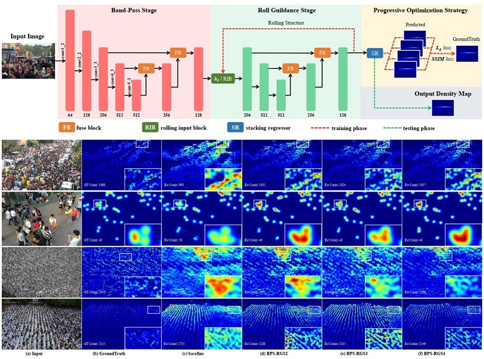
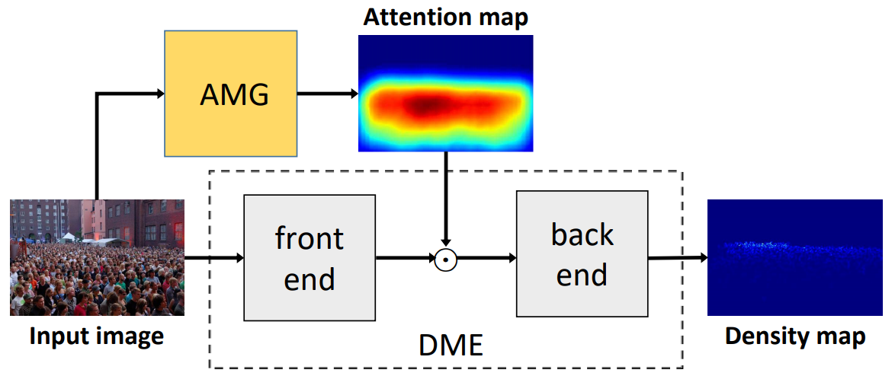

|
|
基于视频的行人检测与属性分析
行人检测与属性分析通过视频分析，实现对监控区域中的人群人数分布、人群外观属性、行人运动轨迹进行精确分析， 该研究在安防监控、自动驾驶及线下商业领域具有重要的意义。
|  |
Scale-aware Progressive Optimization Network
Ying Chen, Lifeng Huang, Chengying Gao, Ning Liu
|

|
Self-Bootstrapping Pedestrian Detection in Downward-Viewing Fisheye Cameras Using Pseudo-Labeling
Kaishi Gao, Qun Niu, Haoquan You, Chengying Gao
|

|
Scale-Aware Rolling Fusion Network for Crowd Counting
Ying Chen, Chengying Gao, Zhuo Su, Xiangjian He, Ning Liu
|
|  |
ADCrowdNet: An Attention-Injective Deformable Convolutional Network for Crowd Understanding
Ning Liu, Yongchao Long, Changqing Zou, Qun Niu, Li Pan, and Hefeng Wu
|

|
Weak-structure-aware visual object tracking with bottom-up and top-down context exploration
Liu Ning, Liu Chang, Wu Hefeng*, and Zhu Hengzheng
|

|
Hierarchical Ensemble of Background Models for PTZ-based Video Surveillance
简介：
研究了一种适用于PTZ摄像机的视频监控分层背景模型，在此基础上实现了由背景建模、
观测帧配准和目标跟踪三个关键部分构成的跟踪系统，并且在多个具有挑战性的场景中取得了优异的跟踪效果。
|